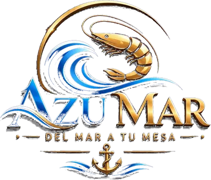

La carta
Todos los precios incluyen impuestos. Abierto todos los días de 12 md a 11 pm.
¿Se te antojó algo?
Pídelo desde el teléfono y te lo llevamos a domicilio, o ven a comerlo frente a La Inmaculada.

EN Pedir a domicilioTodos los precios incluyen impuestos. Abierto todos los días de 12 md a 11 pm.
Pídelo desde el teléfono y te lo llevamos a domicilio, o ven a comerlo frente a La Inmaculada.